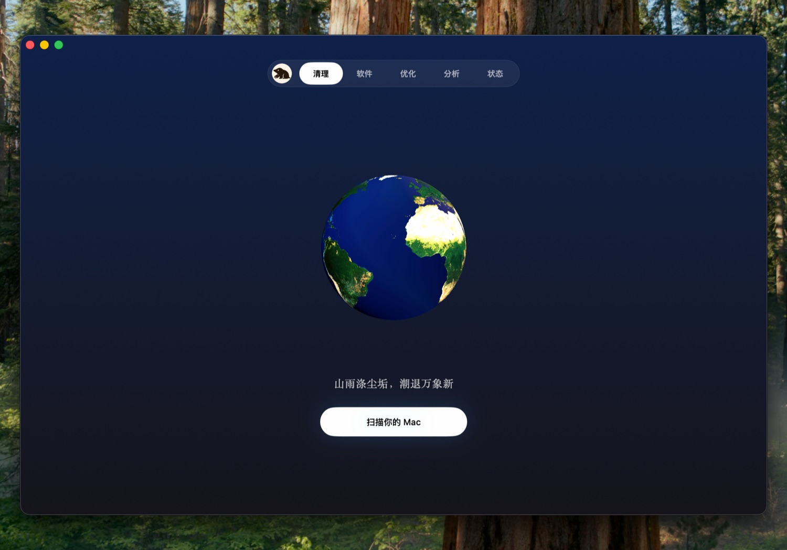

Mole cleans, uninstalls, optimizes, analyzes, and monitors, then gets out of your way.
Tw93
2026.06.14
v1.7.1
Mac maintenance scattered into five subscription apps, each wanting a menu-bar slot and a yearly fee. Mole folds them back into one quiet binary you buy once.

One window, five tools. Mole replaces CleanMyMac, App Cleaner, Sensei, DaisyDisk, and iStat Menus.
5
tools, one binary
$19
no subscription
2
Macs per license
0
menu-bar clutter
Each tool gets its own page and a single job, with no browser tab and no menu-bar widget in sight. The result is a utility you set up once and barely notice afterward.